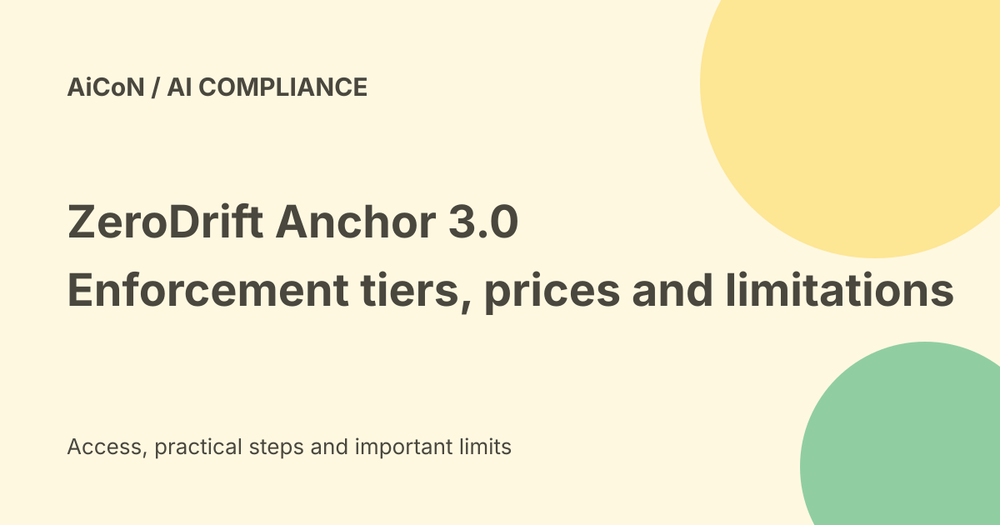

ZeroDrift Anchor 3.0: sizes, prices and compliance limits
ZeroDrift now publishes prices for three Anchor 3.0 sizes. Its model page describes checking outgoing AI text against regulations and company rules, with rewriting in some tiers. The reported accuracy and speed are vendor results, not a guarantee that every message is compliant.

What does an enforcement model do?
Anchor sits on the path between an AI's proposed text and delivery. The company describes a verdict, the applicable rule, the passage found and, in rewriting tiers, a checked replacement.
That is a different job from drafting the message. It still requires a correct rulebook and a decision about what may be delivered.
Three sizes are not identical
Anchor 3.0-mini classifies a whole message and returns a verdict. The product table says it does not rewrite and does not support custom policies.
The flagship model rewrites and verifies, with custom policies through a trained adapter. Max supports policy documents at call time and adds reasoning. Choose by the actual task, not only the shared product name.
Current listed rates
The checked page lists mini at 0.002 US dollars per enforcement, flagship at 0.01 and max at 0.05. It defines one enforcement as one message up to two thousand tokens.
It says rewrite and verification are included where available and output tokens are not billed. New accounts are described as starting with ten dollars in free credits. Trial availability and actual account terms still need checking.
Why message limits matter
A token is a unit used to process content, not exactly one word. A long document may not fit the listed message unit.
Ask how larger inputs, retries and multiple checks are charged. A flat headline rate does not establish the complete cost of a private deployment or production integration.
India cost and rule coverage
These are US-dollar public rates, not an INR checkout total. Currency costs, taxes and private-deployment charges may differ.
The displayed rule areas include US, EU, UK and other market regulations, but do not establish complete coverage of every Indian sector's rules. Confirm RBI, SEBI, IRDAI or other applicable requirements for the actual use case with qualified reviewers.
What does 95.5-percent recall mean?
ZeroDrift reports catching 95.5 percent of violations on a human-labelled FINRA set, compared with 92.9 percent for its best frontier-model comparison.
Recall measures how many real violations were caught in that test. It does not mean 95.5 percent of every possible message is correct, nor that false alarms and missed edge cases are harmless.
How strong is the benchmark evidence?
The page describes one hundred and fifty human-labelled tasks and says results are self-reported, with an independent run in progress.
Do not call that pending independent work a completed replication. Test your own rules, document types and adversarial cases.
Cloud and private deployment
The product page describes cloud or VPC deployment. It lists about 1.5 seconds per API message and under one hundred milliseconds self-hosted as vendor speed claims.
Hardware, input length and deployment can change latency. The tier table lists L40S for mini and flagship and H100 for max, so the broad one-GPU description is not a universal hardware requirement.
Rechecking is not a guarantee
The vendor says rewrites are checked before delivery. A second check can help, but it may repeat the same misunderstanding or miss an omitted fact.
Keep audit trails, escalation and human review for high-risk communications. A compliance rewrite should not quietly change a user's intended promise or recipient.
Custom policies need owners
Give each rule a clear owner and version. Decide which sources control when policies disagree and how exceptions are approved.
A rule that is old or badly translated can be enforced consistently and still be wrong. Validate the policy itself before judging the model.
A careful evaluation
- Confirm the exact tier and billing unit.
- Choose a narrow rule set.
- Use approved, non-sensitive examples.
- Test violations and acceptable messages.
- Measure misses and false alarms separately.
- Inspect whether rewrites preserve facts and intent.
- Keep sensitive sends behind review.
- Confirm data, audit and deployment terms.
No account, message pipeline or paid model call was configured for this guide.
What changed since the original post?
Pricing is now public on the checked model page. We add tier differences, the two-thousand-token unit and the explicit self-reported benchmark qualification instead of treating enforcement as perfect compliance.
Frequently asked questions
Does mini rewrite messages?
The product table says no.
Is every Indian regulation covered?
That was not established. Confirm the actual rulebook.
Is the independent test finished?
The checked page says it is in progress.
Sources: Official Anchor model, sizes, prices and benchmark disclosure. Checked 7 October 2026.